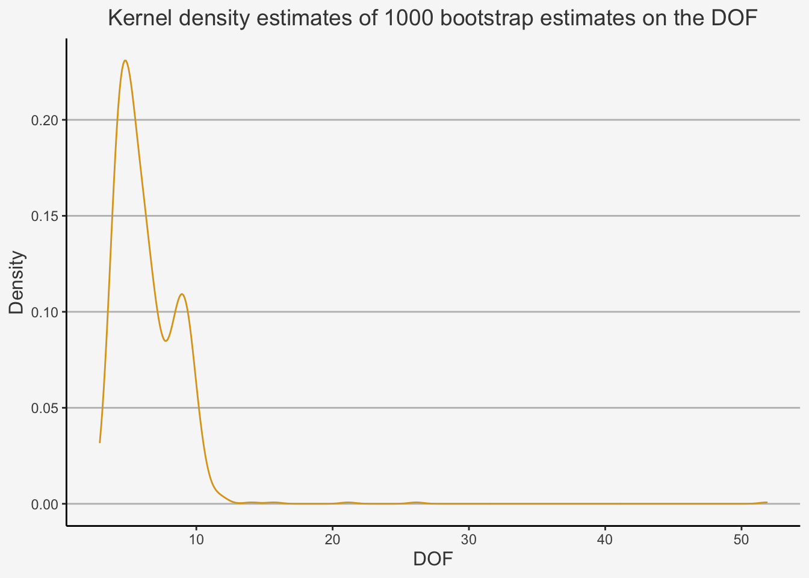
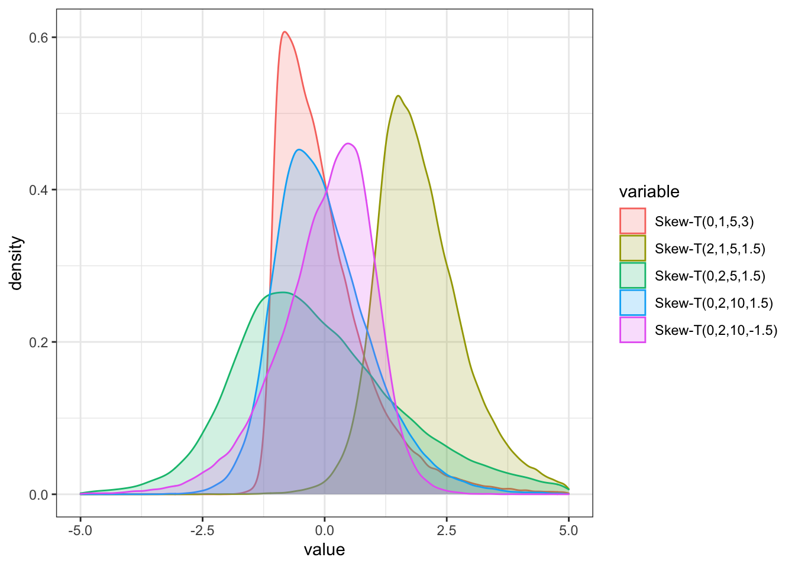
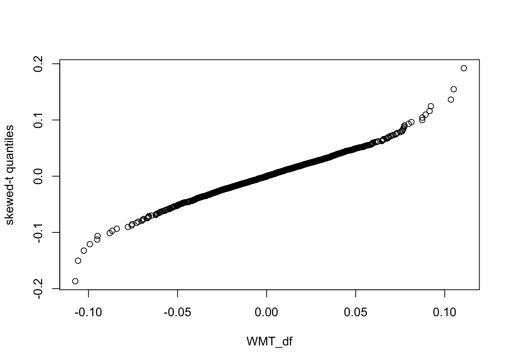
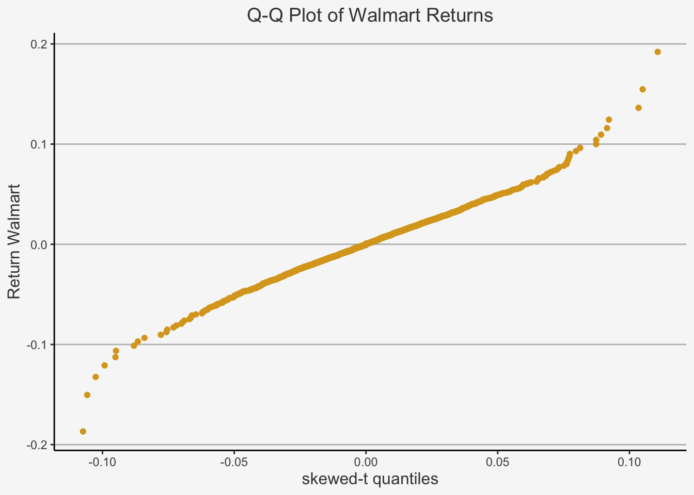
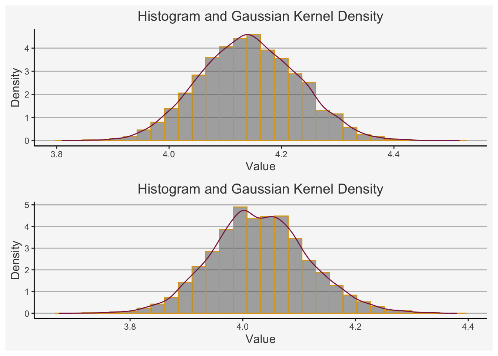

Chapter 3 Resampling Distributions
In this chapter, we will look more closely at Resampling. We understand that each distribution has location, spread and shape parameters. Location parameters defined the actual estimate of the distribution, such as the mean or median. However, we also require spread parameters which quantify the certainty about the estimates. As such, we need to find reasonable quantities that define the certainty of any parameter estimate. This is usually done through the estimation of standard errors. Through their estimation, we are able to draw confidence intervals and conclude statistical properties, as we have encountered in the previous chapter on inductive statistics.
The usual issue with finding such parameters is that they may rely on the specific components of the sample. Thus, they are random variables. For instance, if we obtain the mean from a sample A, then this estimate is just one of many potential samples. It does not need to match the mean from sample B or C. Since each different sample will most likely provide a different estimate, the mean was chosen from a random sample given the possible combinations of samples. As such, A is definitively a random variable. Thus, if we assume that the sample has specific properties which may not be generalised well to the population set, then the standard errors retrieved may not be generally applicable metrics.
We usually assume that the randomly generated coefficient is the long run average which covers the parameter, by the law of large numbers. This is only possible if we assume certain properties of the population function, such as their moments. However, often exact probability calculations cannot be conducted. In these cases, we replace the theoretical formulas by Monte Carlo simulations and sample from the population.
However, what if we do not know anything about the population? That is, we work with an unknown population? This is where resampling, or bootstrap, methods come into play. In this case, we simply sample from the sample. This is known as resampling. By bootstrap approximation we understand the approximation of the sampling process by resampling. They involve repeatedly drawing samples from a sample set and refitting a model of interest on each sample in order to obtain additional information about the fitted model. Such an approach may allow us to obtain information that would not be available from fitting the model only once using the original training sample.
In essence, we have two forms of resampling methods:
- Non-Parametric: Model Free
- Parametric: Model Based
In Non-Parametric Bootstraps, one takes resamples with replacement and assumes no pre-defined form of the density function. We need replacement because replacement gives us IID observations.
In Parametric Bootstraps, we don’t take a sample, but assume that the original sample is IID and follows a parametric family distribution. That is, we have \(f(x|\theta): \theta \in \Theta\). As such, any unknown value of \(\theta\) is the population density. Then, the resamples are IID draws from the density with an estimated \(\hat\theta\).
3.1 Estimating the Moments with Bootstraping
Let’s consider first the theoretical concepts on how to bootstrap the most central statistical properties of a sample. To do so, we assume the following.
Let \(\theta\) be a parameter and \(\hat\theta\) be the estimate of the sample. Further, \(\hat\theta_1*, \dots, \hat\theta_B*\) are the estimates from resamples 1 to B. Further, \(\tilde{\hat\theta}\) is the mean of \(\hat\theta_1*, \dots, \hat\theta_B*\).
Then, we obtain the Bias of the bootstrap as:
\[ Bias_{boot}(\hat\theta) = \tilde{\hat\theta} - \hat\theta \]
The Standard Error of the bootstrap is the sample standard deviation of \(\hat\theta_1*, \dots, \hat\theta_B*\):
\[ s_{boot}(\hat\theta) = \sqrt{\frac{1}{B-1}}\sum_{b=1}^B(\hat\theta_b* - \tilde{\hat\theta})^2 \]
Further, the MSE is given as:
\[ MSE_{boot}(\hat\theta) = \frac{1}{B}\sum_{b=1}^B(\hat\theta_b* - \tilde{\hat\theta}) \]
This MSE represents, as always, bot the bias and variance of the samples, and is given as:
\[ MSE_{boot}(\hat\theta) \approx Bias^2_{boot}(\hat\theta) + s^2_{boot}(\hat\theta) \]
We can apply the bootstrap method directly to calculate the estimates. Doing so, we again use the data on the SMI.
# Load the dataset
SMI <- read.csv("~/Desktop/Master UZH/Data/A2_dataset_03.txt", header = T, sep = "\t")[,1:2]
# Create the returns
SMI_ts <- Return.calculate(xts(SMI[,-1], order.by = as.Date(SMI[,1]), method = "log"))[-1]
colnames(SMI_ts) <- c("Return")
SMI_df <- as.data.frame(SMI_ts)$ReturnWe use the bootstrap method with the bootstrap package. This function has three arguments:
- Data
- Value of the Bootstrap repetitions B
- Function computing the statistic to be bootstrapped
Then, we compute the Bootstrap Mean and Standard Errors as well as the sample MLE and its Standard Errors with the fitdistr() function of the MASS package. This function takes especially two arguments:
- Data
- densfun
densfun is an argument which uses the density function that we define. In this case, we will take the t-statistics density function. Others include “beta”, “cauchy”, “chi-squared”, “exponential”, “gamma”, “geometric”, “log-normal”, “lognormal”, “logistic”, “negative binomial”, “normal”, “Poisson”, or “weibull”.
Based on this density function, we define the MLE distribution used in the bootstrap and the sample.
# First, we calculate the
set.seed(19960531)
# Create the bootstrap
nboot = 1000
mle = function(x){as.vector(fitdistr(x, "t")$estimate)}
# This function now conducts 1000 bootstraps by taking 1000 random samples and calculating the mean, the standard deviation and the DOF
res = bootstrap(SMI_df, nboot, mle)
# Compute the estimates and SE of the bootstrap
## Here, we take the mean values of each row. The rows are
### (I) Estimates
### (II) Standard errors
### (III) DOF
mean_bs <- rowMeans(res$thetastar[,])
# Then, we calculate the standard deviations
se_bs <- apply(res$thetastar[,], 1, sd)
# Compute the estimates and SE of the MLE larger sample
mean_mle <- fitdistr(SMI_df, densfun = "t")$estimate
sd_mle <- fitdistr(SMI_df, densfun = "t")$sd
# Combine all to show the similarities
mle_bs <- rbind(mean_mle, mean_bs, sd_mle, se_bs)
rownames(mle_bs) <- c("Estimate", "Estimate BS n = 1000", "SE", "SE BS n = 1000")
# Plot
mle_bs## m s df
## Estimate 0.008248028 0.035654368 5.411859
## Estimate BS n = 1000 0.008160442 0.035886503 6.354277
## SE 0.002111809 0.002342880 1.594899
## SE BS n = 1000 0.002183371 0.002556044 2.589372We can calculate the Bias as the difference between the estimate and bootstrap estimate mean. Further, the variability is calculated through the difference in standard errors.
This is given as:
Bias_BS = mle_bs[1,1] - mle_bs[1,2]
Bias_BS## [1] -0.02740634Both are rather small, although the bias is smaller than the variability. We can also increase the certainty by taking different density functions we deem to better fit the data.
Importantly, we can also plot the density of the bootstraps to understand for which values of n the MLE is quasi normally distributed. In order to do so, we can do the following:
dof <- as.data.frame(res$thetastar[3,])
colnames(dof) <- "DOF"
# Create plot
dof %>%
ggplot(aes(x = DOF)) +
geom_density(aes(y=..density..), position="identity", alpha=0.5, color = "goldenrod") +
ggtitle("Kernel density estimates of 1000 bootstrap estimates on the DOF") +
ylab("Density") + xlab("DOF") +
scale_color_manual(values=c("tomato3", "khaki3", "lightsteelblue3", "dodgerblue4", "violetred4")) +
theme(plot.title= element_text(size=14, color="grey26",
hjust=0.5,
lineheight=1.2), panel.background = element_rect(fill="#f7f7f7"),
panel.grid.major.y = element_line(size = 0.5, linetype = "solid", color = "grey"),
panel.grid.minor = element_blank(),
panel.grid.major.x = element_blank(),
plot.background = element_rect(fill="#f7f7f7", color = "#f7f7f7"), axis.title.x = element_text(color="grey26", size=12),
axis.title.y = element_text(color="grey26", size=12),
axis.line = element_line(color = "black")) 
This shows importantly that the SMI returns, when considered at a monthly interval, do not follow a unimodal, normal distribution. Rather, it is bimodal with severe right skewed properties. This has important implications on the distribution assumption. We understand that, in a normal distribution, the DOF is \(\infty\). However, in this bootstrapped example, we can see that the DOF is likely to be less than approximately 13. As such, even the most extreme DOF are unlikely to satisfy the condition needed for normal distribition. As such, n = 392 is not enough to assume a normal distribution of the returns. As such, the t-distribution is better suited.
3.2 Bootstrap Confidence Intervals
Besides the mean, standard error and DOF to infer on the properties of a sample distribution and its empirical validity, we can also use bootstrap to construct confidence intervals (CI).
In the case of bootstraps, we take an approximation of the population probability distribution using individual samples. When CIs use approximations, then there are two coverage probabilities: Nominal and Actual. We can calculate both and show their discrepancies from the bootstrap. This is needed to calculate the accuracy of a bootstrapped CI, which is the difference between the two.
3.2.1 Bootstrap of Normal CI
We again define \(\hat\theta\) as estimate and \(s_{boot}(\hat\theta\) as its standard deviation. Then, the CI is just calculated in the usual way as:
\[ \hat\theta \pm s_{boot}(\hat\theta)z_{\alpha/2} \]
Then the CI can be calculated in the original way. Please also note that we do not assume that the population is normally distributed. Rather, \(\hat\theta\) follows a normal distribution according to the CLT.
3.2.2 Bootstrap of t-CI
If we have a standard error of \(\hat\theta\) available, we can use the Bootstrap-t method where we obtain more accurate CIs. We can easily show how the bootstrap-t and the usual t CI method are related. To do so, we use the usual t-statistic given by:
\[ t = \frac{\mu - \bar Y }{s/\sqrt{n}} \]
For normally distributed data, we understand that the probability distribution of t has n-1 degrees of freedom. Consequently, \(t_{\alpha/2, n-1}\) quantifies the \(\alpha/2\) upper and lower quantile values of the distribution.
Therefore, we get: that the probability is \(1-\alpha\) for:
\[ -t_{\alpha/2, n-1} \leq t \leq t_{\alpha/2, n-1} \]
and further:
\[ 1-\alpha = P[\bar Y - t_{\alpha/2, n-1}\frac{s}{\sqrt{n}} \leq \mu \leq \bar Y + t_{\alpha/2, n-1}\frac{s}{\sqrt{n}}] \]
and finally:
\[ \bar Y \pm \frac{s}{\sqrt{n}} t_{\alpha/2, n-1}\frac{s}{\sqrt{n}} \]
is a \(1-\alpha\) CI for \(\mu\) if we assume a normal distribution. Please revisit the chapter on inductive statistics to have a more elaborate discussion on this.
If we are not sampling from a normal distribution, we can no longer conduct this type of inference for the CIs. This is because we do not know the probability distribution. Further, even if we knew it, we could mathematically not precisely transform the distribution into a t-distribution.
However, we can do so by using the bootstrap. In this case, we just calculate:
\[ t_{boot,b} = \frac{\bar Y - \bar Y_{boot,b}}{s_{boot,b}/\sqrt{n}} \]
Here we just replaced the mean and sd MLE with the bootstrapped alternatives. Since all observations are independent of each other, the bootstrap estimates can be treated as a random sample from the distribution of the t-statistic. After we calculate B values of the t-statistic, we can find the \(\alpha/2\) upper and lower quantiles of these values. They can be calculated independent of each other.
Based on this, we then have the CI given as:
\[ CI = (\bar Y - t_L\frac{s}{\sqrt{n}}, \bar Y + t_U\frac{s}{\sqrt{n}}) \]
where we just replaced the usual t-values by the bootstrapped forms called \(t_L\) and \(t_U\).
As such, by creating an empirical distribution from the sample where we have an equally weighted resampling, we can create a probability distribution used for CIs.
Of course, we can expand the use of the t-bootstrapped CI to obtain CIs of other parameters, such as the standard deviation or further moments. To do so, we can take the usual function and apply it onto another bootstrapped parameter:
\[ t_{boot,b} =\frac{\hat\theta - \hat\theta_b*}{s_b(\hat\theta)} \]
Then, the CI will again be:
\[ CI = (\hat\theta - t_Ls(\hat\theta), \hat\theta + t_Us(\hat\theta)) \]
Now, let’s look at an example for the CI calculation again. We know from the chapter on qunatile-based location, scale and shape parameters that a quantile-based parameter representing the tail weight is defined as the ration of two scale parameters:
\[ \frac{s(p_1, 1-p_1)}{s(p_2, 1-p_2)} \]
whereas:
\[ s(p_1, 1-p_1) = \frac{F^{-1}(1-p_1) - F^{-1}(p_1)}{a} \]
Now, we can retrieve the mean of the respective tail weights. However, obtaining a CI is easily possible with a bootstrap as we will show. We will calculate \(BC_a\) CIs. These are CIs which are bias corrected and accelerated. They are a form of sophisticated percentile methods which correct for bias and heteroskedasticity in bootstrapping methods. This method estimates the bias and the rate of change of the variance. This is done with the bcanon() function of the bootstrap package.
Let’s apply this to the SMI returns.
We essentially follow the same process as earlier. But now, instead of the mean from the t-distribution, we calculate the CI for the tail distribution. This is done by defining a function we call “heavy_t”. Then, we use the bias corrected bootstrap method and run the usual formula to obtain the CIs.
# First, define a function which calculates the shape parameter:
heavy_t = function(x, p1 = 0.02, p2 = 0.25){
q = quantile(x, c(p1,p2,1-p2,1-p1))
(q[4] - q[1]) / (q[3] - q[2])
}
# Then, calculate the bootstrap as before, but bias corrected. Doing so, you need the bcanon function
bca_ht = bcanon(SMI_df, 2000, heavy_t)
bca_ht$confpoints## alpha bca point
## [1,] 0.025 3.141040
## [2,] 0.050 3.216642
## [3,] 0.100 3.315608
## [4,] 0.160 3.390420
## [5,] 0.840 4.032531
## [6,] 0.900 4.140335
## [7,] 0.950 4.291562
## [8,] 0.975 4.438047As such, we can see that the 90% CI is between (3.19, 4.25). Note that this is the formula for \((\bar Y - t_L\frac{s}{\sqrt{n}}, \bar Y + t_U\frac{s}{\sqrt{n}})\). In any purely normal distribution, the value would be approximately 2.91. Consequently, we expect higher tail risk, which could not be approximated by normal distributions.
3.3 Summary on Data
In the next chapter, we will look at certain general methods that we used in the previous sub-chapters. Doing
We now look at the Walmart stock prices to define the data we are working with
# Get walmart and transform to xts object
WMT <- tq_get("WMT",
from = "1990-01-01",
to = "2022-02-01",
get = "stock.prices")
WMT_ts <- xts(WMT[,8], order.by = as.Date(WMT$date))
# Calculate returns
WMT_ts_ret <- WMT_ts %>% Return.calculate(method = "log")
WMT_ts_ret <- WMT_ts_ret[-1]Based on this, we now follow certain tests to ensure that we understood the bootstrap principles.
For instance, we said that sometimes the data may not follow a normal distribution. This can be the case if we assume a skewed distribution with heavy tails. Consequently, we may wonder what a skewed t-distribution actually looks like. To do so, we can take the help of the qsstd function.
# First, we define the function for the parameter distribution, as with all common distributions before.
a <- rsstd(100000, mean = 0, sd = 1, nu = 5, xi = 3)
b <- rsstd(100000, mean = 2, sd = 1, nu = 5, xi = 1.5)
c <- rsstd(100000, mean = 0, sd = 2, nu = 5, xi = 1.5)
d <- rsstd(100000, mean = 0, sd = 1, nu = 10, xi = 1.5)
e <- rsstd(100000, mean = 0, sd = 1, nu = 10, xi = -1.5)
df_rsstd <- as.data.frame(cbind(a,b,c,d,e))
colnames(df_rsstd) = c("Skew-T(0,1,5,3)", "Skew-T(2,1,5,1.5)", "Skew-T(0,2,5,1.5)", "Skew-T(0,2,10,1.5)", "Skew-T(0,2,10,-1.5)")
df_rsstd_melt <- melt(df_rsstd)## No id variables; using all as measure variables#Plot
df_rsstd_melt %>%
ggplot(aes(x = value, fill = variable, color = variable)) +
geom_density(alpha = 0.2) +
theme_bw() + xlim(-5,5)## Warning: Removed 3924 rows containing non-finite values (stat_density).
As we can see, we can define four parameters. We find the following:
- The mean just shifts the location of the distribution
- The standard deviation increases the spread of the distribution
- The nu parameter is the shape parameter. The larger, the more tail weights
- The xi parameter is the skewness parameter. The higher, the more right-skewed (positive right skewed, negative left skewed)
Since we stated that many returns may not be normally distributed, it is interesting to see how the different distributions can fit onto the data at hand. To do so, we can plot two distinct QQ-Plots on the data and compare their fit.
# First, we calculate the dataframe
WMT_df <- as.data.frame(WMT_ts_ret)[,1]
# Fit skewed t-distribution
fit_skew_t = sstdFit(WMT_df)
# Then we define a grid onto which we will employ the skewed t-values.
n = length(WMT_df)
q.grid = (1:n) / (n+1)
# Then we create Skew Student-t Distribution and Parameter Estimation values to to compute the quantiles of distribution function. This is the same approach as we would use to simulate a skewed t-distribution (for instance, with F/S or A/C skewness). Here, we calculate the quantile values to plot them against the actual observations.
q_skew <- qsstd(q.grid,
mean = fit_skew_t$estimate[1],
sd = fit_skew_t$estimate[2],
nu = fit_skew_t$estimate[3], # Shape parameter
xi = fit_skew_t$estimate[4]) # skewness parameter
# Create DF
qq <- qqplot(WMT_df, q_skew,
ylab = "skewed-t quantiles" )
qq_df <- as.data.frame(cbind(qq$x, qq$y))
colnames(qq_df) <- c("skewed-t quantiles", "Return Walmart")
# Plot the qqplot
qq_df %>%
ggplot(aes(x = `skewed-t quantiles`, y = `Return Walmart`)) +
geom_point(color = "goldenrod") +
ggtitle("Q-Q Plot of Walmart Returns") +
scale_color_manual(values=c("tomato3", "khaki3", "lightsteelblue3", "dodgerblue4", "violetred4")) +
theme(plot.title= element_text(size=14, color="grey26",
hjust=0.5,
lineheight=1.2), panel.background = element_rect(fill="#f7f7f7"),
panel.grid.major.y = element_line(size = 0.5, linetype = "solid", color = "grey"),
panel.grid.minor = element_blank(),
panel.grid.major.x = element_blank(),
plot.background = element_rect(fill="#f7f7f7", color = "#f7f7f7"), axis.title.x = element_text(color="grey26", size=12),
axis.title.y = element_text(color="grey26", size=12),
axis.line = element_line(color = "black")) 
Given the QQ-Plot, we can observe that it fits the data with certain outliers on both sides. As such, we can observe that the data can fit approximately the t-skewed distribution. However, there still are some discrepancies. But given the normal distribution, we have seen improvements in the resampling.
Next on, we are interested in finding out about the Kurtosis. Note that we can create a kurtosis with the fourth moment order. Based on this kurtosis, we then implement both a parametric and non-parametric resampling technique, also based on the skewness of the t-distribution to account for heavy tails.
quKurt = function(y, p1 = 0.025, p2 = 0.25){
Q = quantile(y, c(p1, p2, 1 - p2, 1 - p1))
k = (Q[4] - Q[1]) / (Q[3] - Q[2])
k
}
nboot = 5000
ModelFree_kurt = rep(0, nboot)
ModelBased_kurt = rep(0, nboot)
set.seed("5640")
for (i in 1:nboot){
samp_ModelFree = sample(WMT_df, n, replace = TRUE)
samp_ModelBased = rsstd(n, fit_skew_t$estimate[1],
fit_skew_t$estimate[2],
fit_skew_t$estimate[3], fit_skew_t$estimate[4])
ModelFree_kurt[i] = quKurt(samp_ModelFree)
ModelBased_kurt[i] = quKurt(samp_ModelBased)
}
dens <- density(ModelFree_kurt)
# Create DF
dF_qk <- as.data.frame(cbind(ModelFree_kurt, dens$x, dens$y))## Warning in base::cbind(...): number of rows of result is not a multiple of vector length (arg 2)# Create plot
a <- dF_qk %>%
ggplot(aes(x = ModelFree_kurt)) +
geom_histogram(aes(y=..density..), position="identity", alpha=0.5, color = "goldenrod") +
geom_line(aes(x = dF_qk$V2, y = dF_qk$V3), color = "violetred4") + ggtitle("Histogram and Gaussian Kernel Density") +
ylab("Density") + xlab("Value") +
scale_color_manual(values=c("tomato3", "khaki3", "lightsteelblue3", "dodgerblue4", "violetred4")) +
theme(plot.title= element_text(size=14, color="grey26",
hjust=0.5,
lineheight=1.2), panel.background = element_rect(fill="#f7f7f7"),
panel.grid.major.y = element_line(size = 0.5, linetype = "solid", color = "grey"),
panel.grid.minor = element_blank(),
panel.grid.major.x = element_blank(),
plot.background = element_rect(fill="#f7f7f7", color = "#f7f7f7"), axis.title.x = element_text(color="grey26", size=12),
axis.title.y = element_text(color="grey26", size=12),
axis.line = element_line(color = "black"))
# Create DF
dens_param <- density(ModelBased_kurt)
dF_qk_param <- as.data.frame(cbind(ModelBased_kurt, dens_param$x, dens_param$y))## Warning in base::cbind(...): number of rows of result is not a multiple of vector length (arg 2)b <- dF_qk_param %>%
ggplot(aes(x = ModelBased_kurt)) +
geom_histogram(aes(y=..density..), position="identity", alpha=0.5, color = "goldenrod") +
geom_line(aes(x = dF_qk_param$V2, y = dF_qk_param$V3), color = "violetred4") + ggtitle("Histogram and Gaussian Kernel Density") +
ylab("Density") + xlab("Value") +
scale_color_manual(values=c("tomato3", "khaki3", "lightsteelblue3", "dodgerblue4", "violetred4")) +
theme(plot.title= element_text(size=14, color="grey26",
hjust=0.5,
lineheight=1.2), panel.background = element_rect(fill="#f7f7f7"),
panel.grid.major.y = element_line(size = 0.5, linetype = "solid", color = "grey"),
panel.grid.minor = element_blank(),
panel.grid.major.x = element_blank(),
plot.background = element_rect(fill="#f7f7f7", color = "#f7f7f7"), axis.title.x = element_text(color="grey26", size=12),
axis.title.y = element_text(color="grey26", size=12),
axis.line = element_line(color = "black"))
a + b + plot_layout(ncol = 1, heights = c(5, 5))## Warning: Use of `dF_qk$V2` is discouraged. Use `V2` instead.## Warning: Use of `dF_qk$V3` is discouraged. Use `V3` instead.## `stat_bin()` using `bins = 30`. Pick better value with `binwidth`.## Warning: Use of `dF_qk_param$V2` is discouraged. Use `V2` instead.## Warning: Use of `dF_qk_param$V3` is discouraged. Use `V3` instead.## `stat_bin()` using `bins = 30`. Pick better value with `binwidth`.